Official User Manual for Naval Architecture & Shipbuilding
Welcome to the CSL CAD VIEWER. Designed specifically for the rigorous demands of Cochin Shipyard Ltd., this cross-platform application allows engineers and draftsmen to view, analyze, and inspect critical 2D drawings and complex 3D hull models.
Platform Compatibility: Fully optimized for Desktop PCs running Windows 8 and above, as well as Android Tablets (Android 10.0+) for on-the-go inspections in the dry dock.
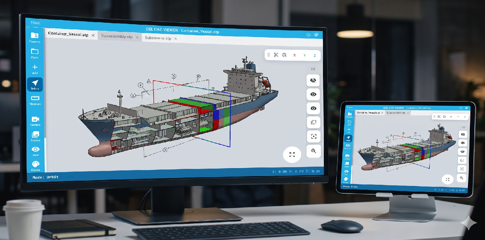
Figure 1: Main Application Interface
The CSL CAD VIEWER supports the industry-standard formats required for naval engineering and structural modeling. The supported formats, loaded sequentially via our optimized pipeline, are:
| Format | Description |
|---|---|
| .3dd | Custom 3D project files |
| .dxf | 2D/3D Drawing Exchange Format |
| .3dcsl | Proprietary Cochin Shipyard CAD format |
| .step / .stp | Standard for the Exchange of Product model data |
| .3dm | Rhino 3D Model files |
| .igs / .iges | Initial Graphics Exchange Specification |
| .stl | Stereolithography / 3D printing format |
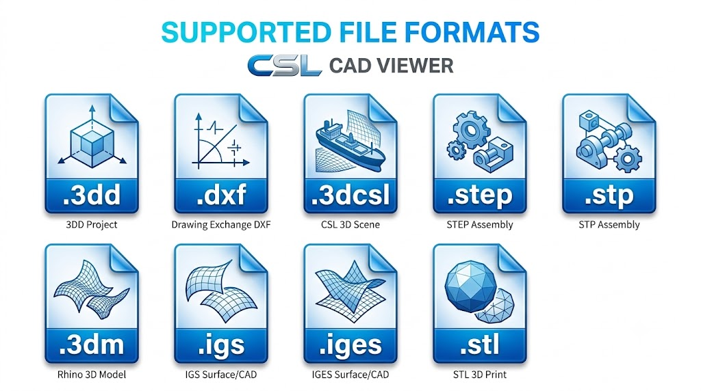
Figure 2: Supported File Formats Menu
When operating the CSL CAD VIEWER on a Windows 8+ workstation, use standard mouse controls to inspect structural blocks and piping layouts:
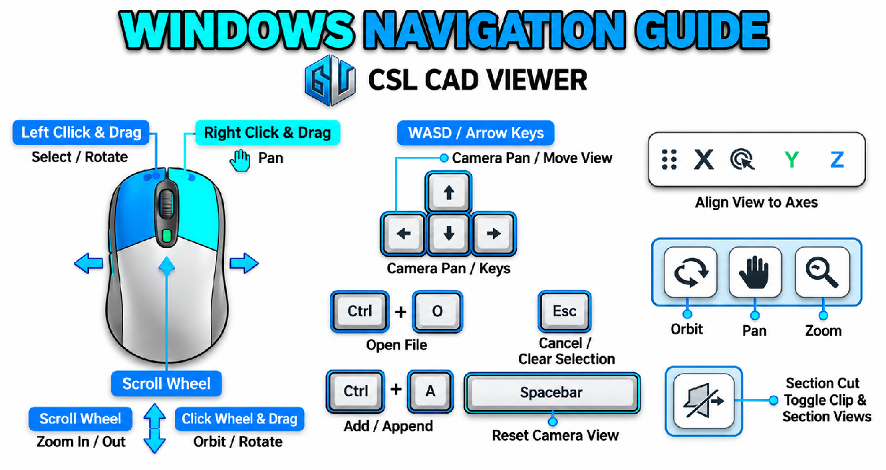
Figure 3: PC Mouse Navigation
For field engineers using Android tablets on the shipyard floor, the viewer utilizes intuitive multi-touch gestures:
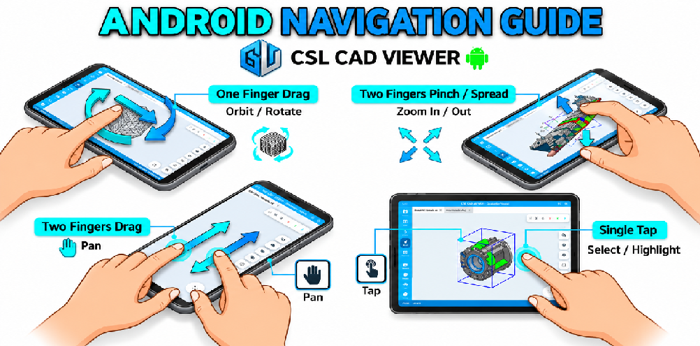
Figure 4: Android Tablet Touch Gestures
Ship models are highly complex assemblies. The Model Tree (Outliner) helps you isolate specific sections of the ship.
Click the Tree Icon to open the hierarchy. You can toggle the visibility of individual decks, frames, or equipment by clicking the Eye icon next to the component name.
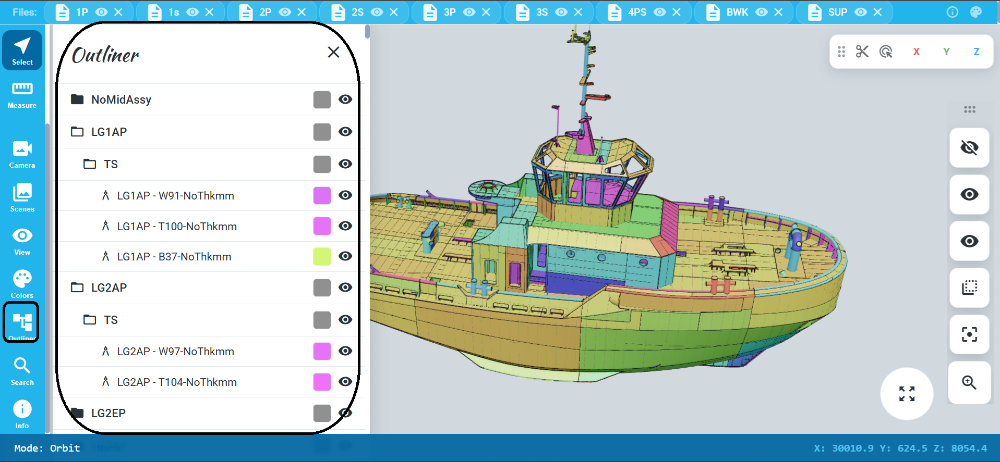
Figure 5: Model Outliner & Hierarchy
Accurate dimensions are critical in shipbuilding. Use the Measurement Tool to verify distances between structural members directly within the viewer.
Click the Ruler Icon, select your start point on the model, and then select your end point to view the exact linear dimension.
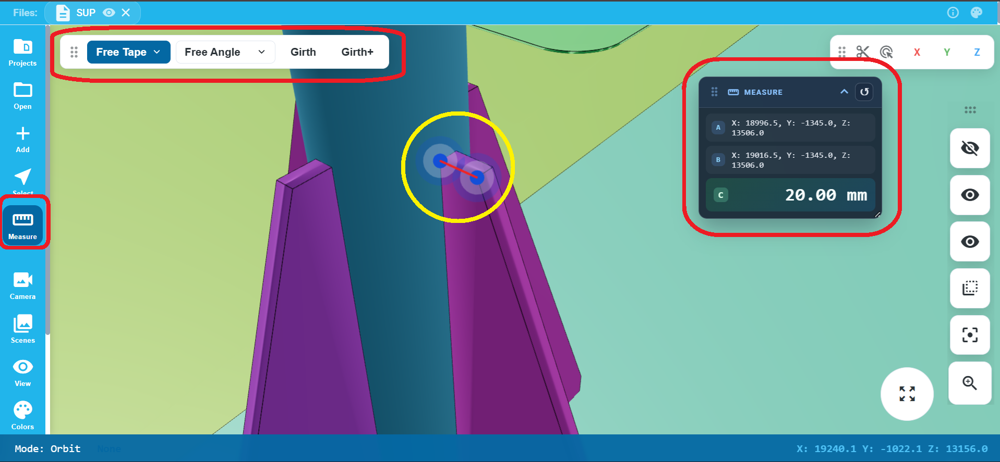
Figure 6: Distance Measurement Tool
To inspect internal compartments, tanks, and bulkheads, activate the Section Plane tool.
Click the Section Icon to generate a cutting plane. You can push or pull this plane along the X, Y, or Z axis to reveal the internal cross-section of the ship block.
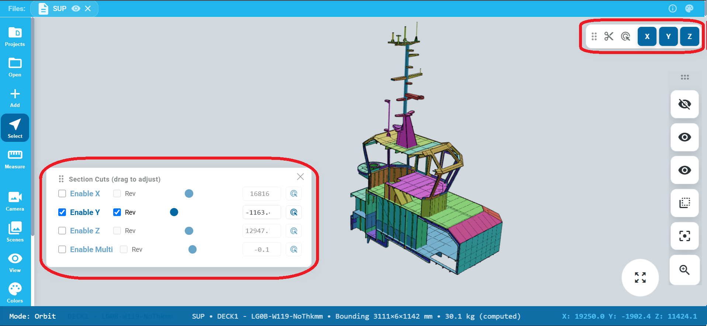
Figure 7: Cross-Section Slicing
Adjust the visual output to suit your environment. If you are reviewing models outdoors on a tablet, adjusting contrast can help.
Click the Settings Icon to access the Color Manager. Here, you can switch between Light and Dark themes or override component colors to highlight specific systems.
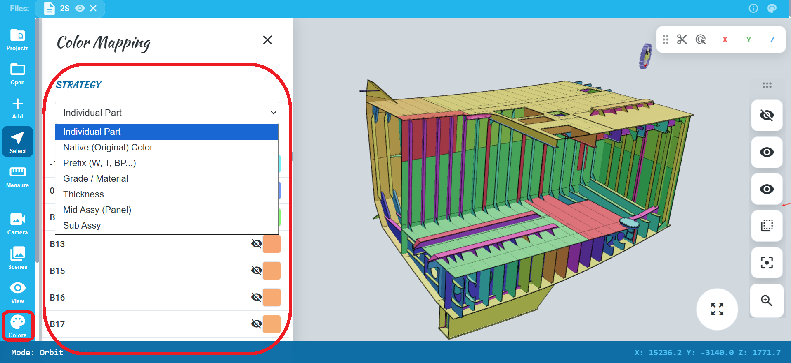
Figure 8: Display & Color Settings
Checking the correct inclination of brackets, chamfers, and stiffener alignments is crucial. The Angle Measuring tool allows for precise verification.
Click the Angle Tool Icon. Select three points: the vertex (corner) first, followed by the two end points along the intersecting edges. The viewer will calculate and display the included angle in degrees.
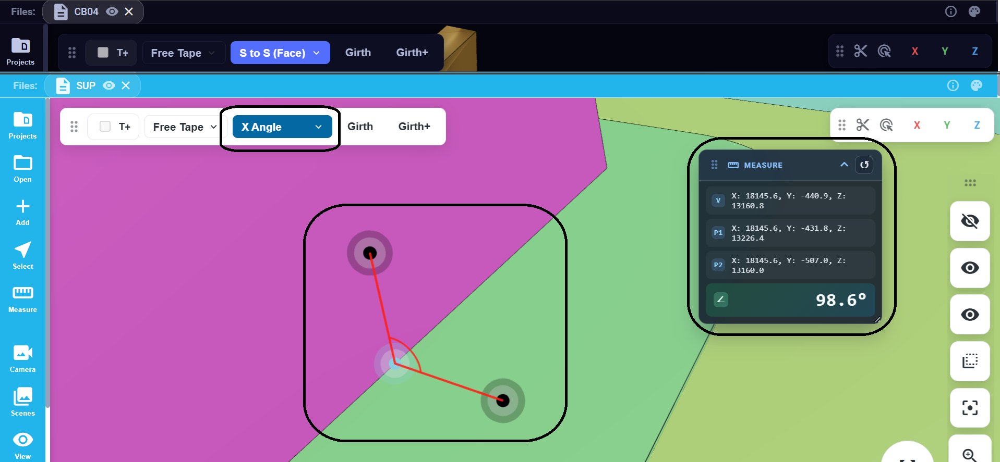
Figure 9: Angle Measuring Tool
The Girth tool calculates the perimeter or curved length of hull sections, pipe runs, and plate contours.
Select the Girth Icon and click on a continuous edge or boundary loop. The viewer will output the total cumulative length of the selected geometry.
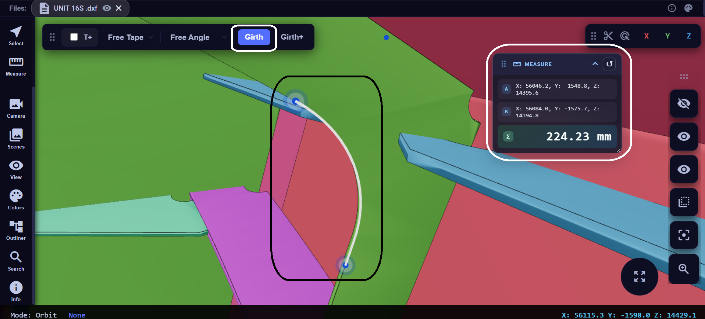
Figure 10: Girth Measurement Tool
Quickly snap the camera to standard engineering perspectives using the View Options menu.
Available presets include: Top, Bottom, Port (Left), Starboard (Right), Forward (Front), Aft (Back), and Isometric. These views are essential for aligning the 3D model with 2D profile drawings.
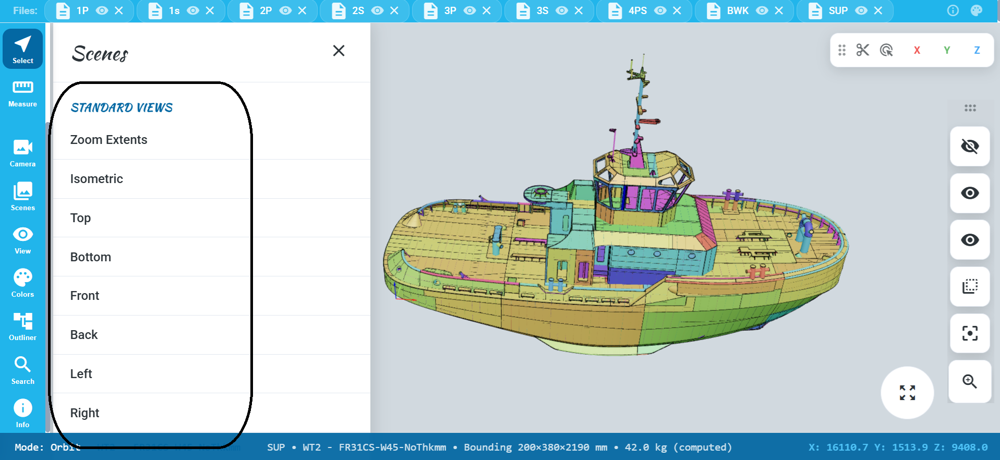
Figure 11: View Options and Presets
Perform batch operations on several components at once using Multi-Selection.
Hold the Ctrl / Cmd key while clicking to select multiple individual parts, or use the Box Select tool to draw a rectangle over an entire bulkhead to select all attached stiffeners and plates simultaneously.
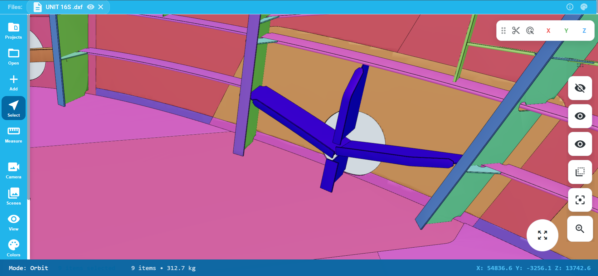
Figure 12: Multi-Selection Tool
When inspecting a complex assembly (like an engine room), surrounding structures can obstruct your view. Isolation Mode solves this.
Select a specific part or piping spool, right-click, and choose Isolate. All unselected parts will instantly become hidden, leaving only your target geometry on screen.
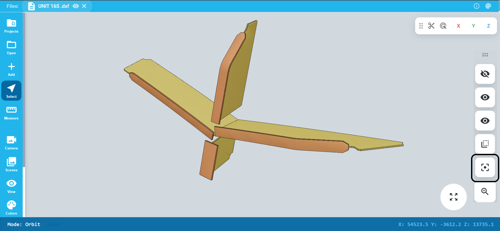
Figure 13: Isolation Mode
X-Ray Mode applies a global transparency effect to the entire model.
Activating X-Ray allows you to see right through the outer hull plating to inspect the internal structural framework, piping runs, and tank boundaries without completely hiding the exterior shell.
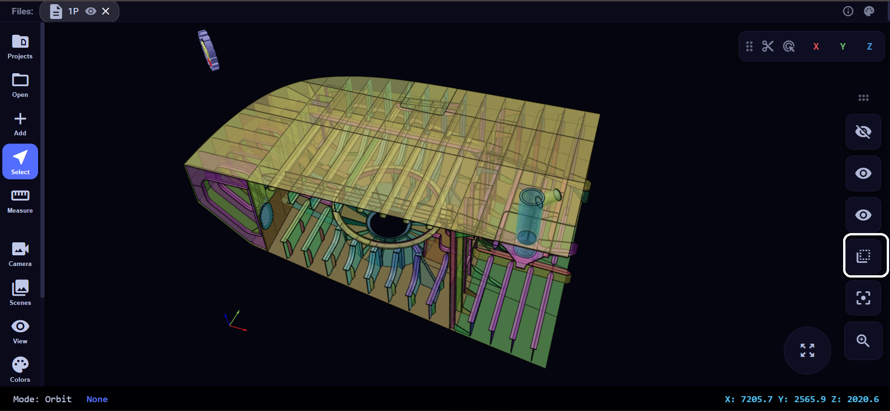
Figure 14: X-Ray / Transparent Mode
For granular visibility control, you can temporarily remove obstructing elements from the viewport.
Select any part and click the Hide button to make it invisible. To restore it, click Unhide All from the main toolbar or locate the hidden part in the Model Tree and click its eye icon.
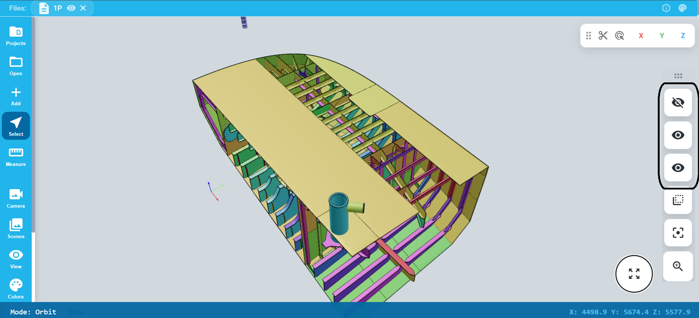
Figure 15: Hide and Unhide Functionality
Visualize how shadows will fall across the vessel during different times of the day using Sunlight Settings.
Adjust the sliders for Azimuth (Sun direction) and Elevation (Sun height) to cast accurate dynamic shadows over the ship's superstructure and dry dock environment.
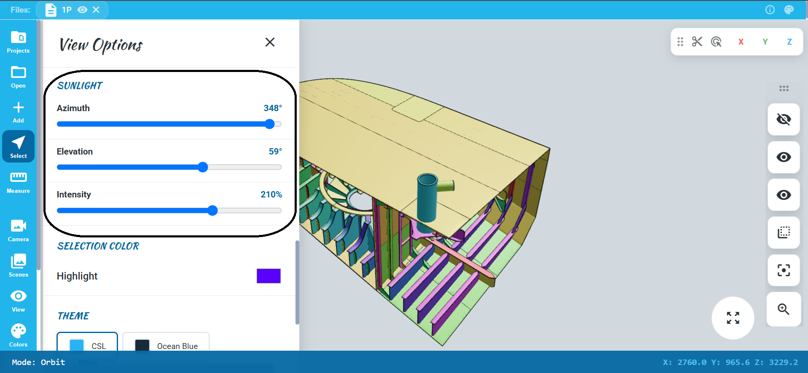
Figure 16: Sunlight and Shadow Settings
The CSL CAD VIEWER allows you to combine multiple CAD files into a single scene.
Use the Add File button to load secondary models—such as a piece of outfitting equipment (.stp) or a piping layout (.dxf)—and overlay it onto your currently loaded hull block (.3dcsl) to check for clashes.
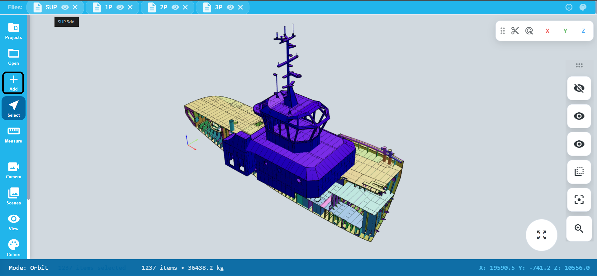
Figure 17: Adding/Appending Multiple Files
Customize the rendering environment of your workspace using the Scene options.
Here you can toggle the visibility of the reference grid, adjust the global bounding box display, and change the environmental skybox or background gradient to enhance model contrast.
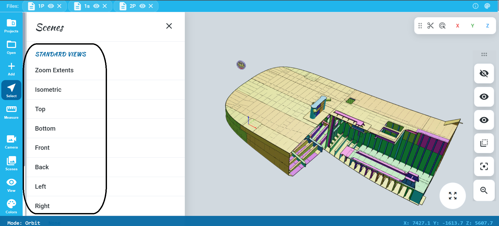
Figure 18: Scene Environment Settings
Switch between different mathematical camera projection models depending on your task.
Toggle between Perspective Mode (realistic, human-eye view, ideal for 3D walkthroughs) and Orthographic Mode (parallel lines, no depth distortion, required for 2D dimension checking and DXF viewing).
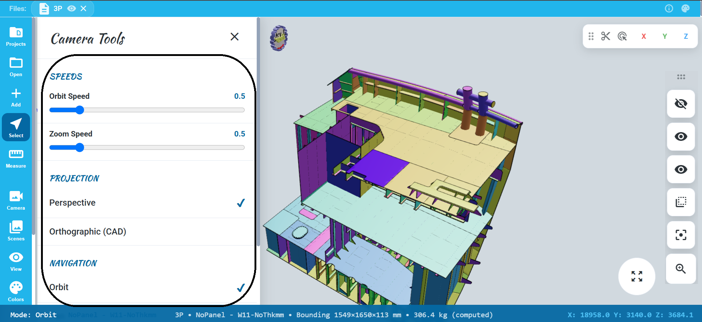
Figure 19: Perspective vs. Orthographic Camera Toggle
Instantly locate specific structural members within massive ship assemblies using the Search Function.
Click the Magnifying Glass, type the Part ID, material code, or layer name (e.g., "WebFrame_Aft"), and the viewer will automatically select the part and zoom the camera directly to it.
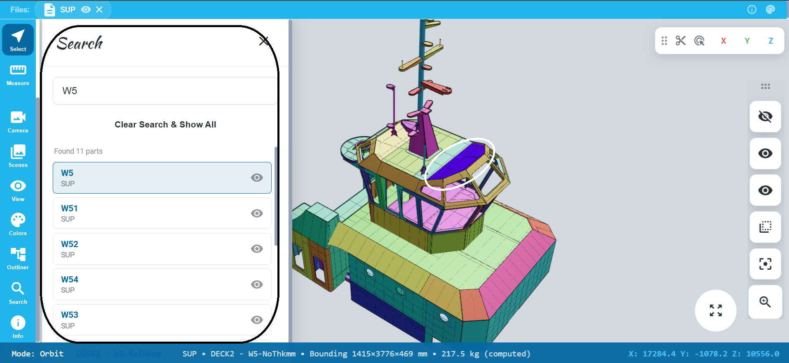
Figure 20: Part Search and Filtering
Extract crucial engineering metadata directly from the loaded CAD geometry.
Select a part and click the Info ( i ) Icon to display its properties, including surface area, bounding box dimensions, volume, layer assignment, and original CAD material data.
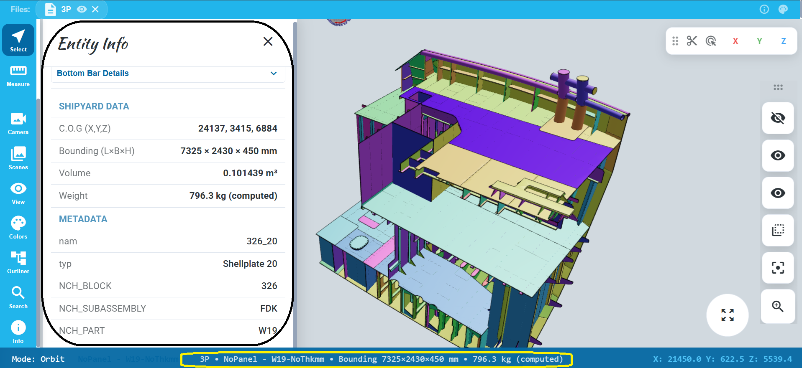
Figure 21: Model Information and Metadata
Optimize the display for DXF drawings and wireframe meshes.
Use the Line Weight slider to thicken 2D CAD lines for better visibility on high-resolution monitors. The Screen Size / Fullscreen toggle maximizes the viewport across your entire monitor or tablet display.
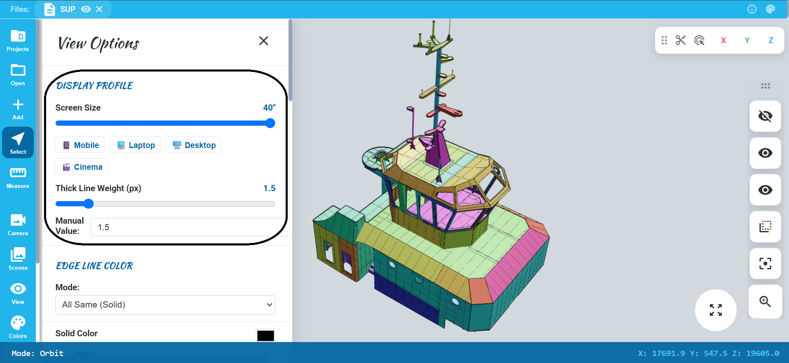
Figure 22: Screen Size and Line Weight Controls
The viewer supports a multi-document interface. You can load several different hull blocks or drawings simultaneously in Opened Tabs across the top of the screen.
Within any active tab, use the Select Whole Model or Hide Whole Model buttons to quickly apply global actions to everything currently loaded in that specific tab without affecting the others.
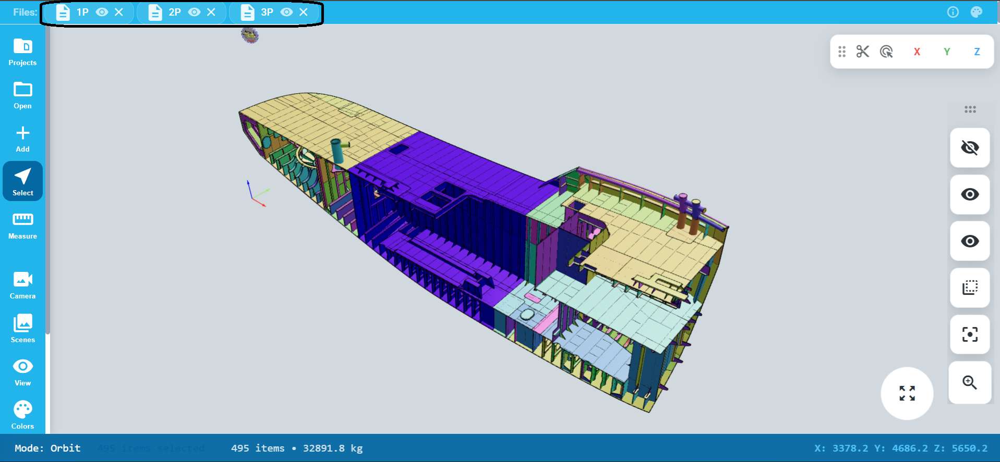
Figure 23: Opened Tabs & Whole Model Management